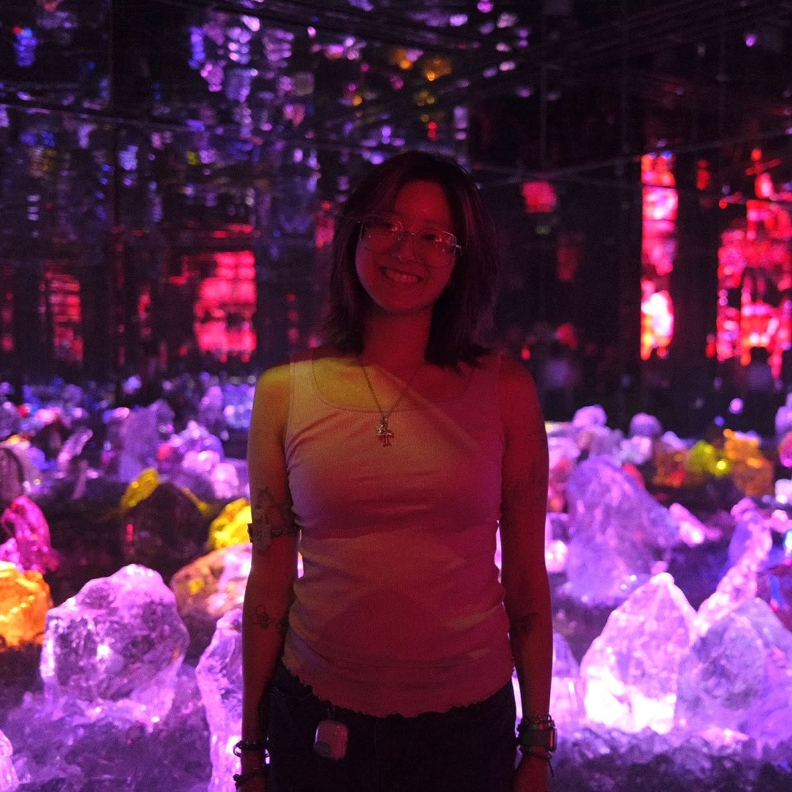
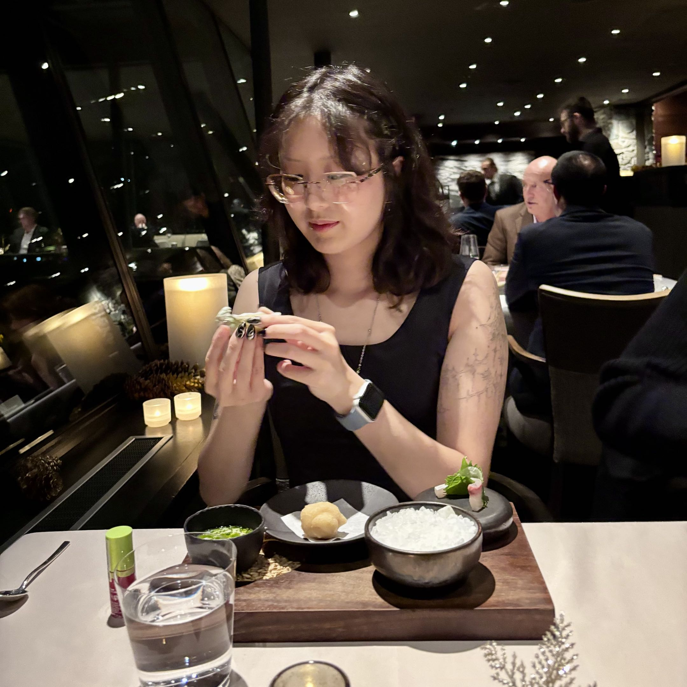
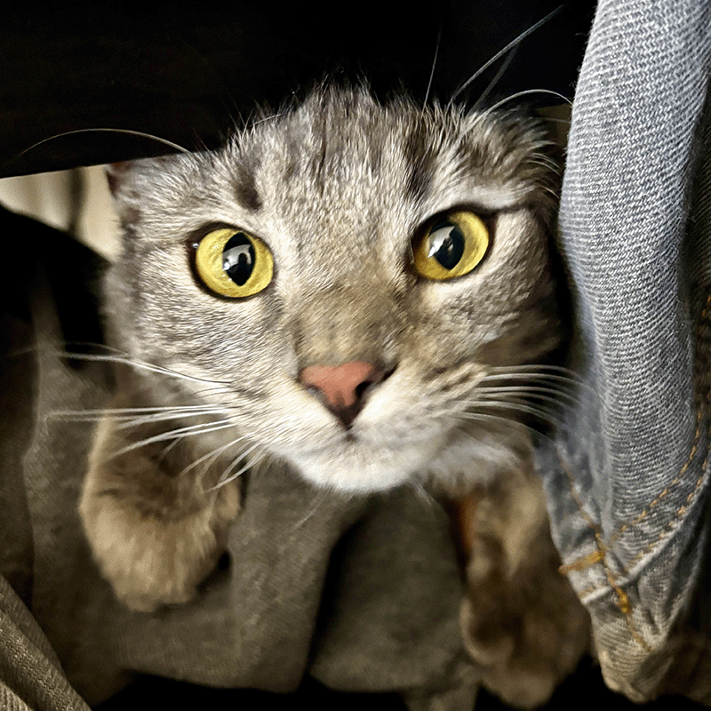
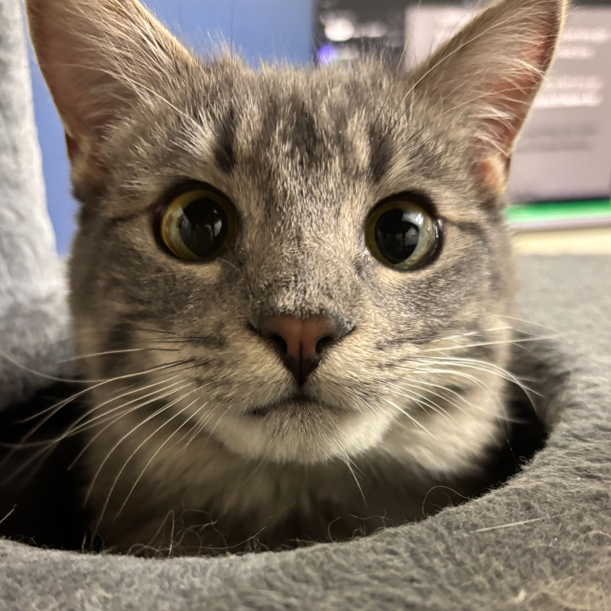

About Me






Audrey Wai is a scientist turned artist, which reflects greatly in her art, thought process, and overall thinking. Most of her art is experimental and dives into art mediums or art processes that she has little to no knowledge of. Her goal in art is to find what mediums she enjoys working with and finding the subject matter and themes she wants to convey and tackle. She views art through a scientific, almost formulaic lens, hence the struggle with art and artistry. In the future, she plans to explore UI/UX and how art intersects with the digital age.
She sees art as a plethora of learning opportunities and experiments. She has gone on three study abroads to Venice, Italy, Paris, France, and Tokyo and Kyoto, Japan. These opportunities have given her a chance to observe and understand art in Western Europe in Asia.